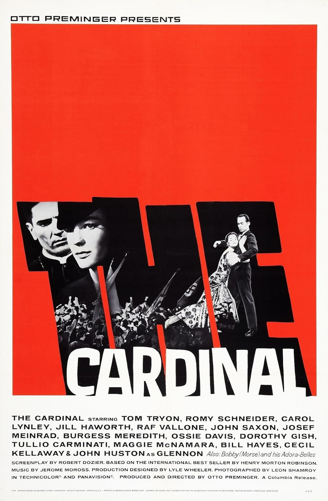

The Cardinal
36th Academy Awards
(Oscars 1964)
6 Nominations, 0 Awards
| Nominations | ||
|---|---|---|
| Category | Nominees | Result |
| Actor in a Supporting Role | John Huston | Nominated |
| Directing | Otto Preminger | Nominated |
| Cinematography (Color) | Leon Shamroy | Nominated |
| Film Editing | Louis R. Loeffler | Nominated |
| Art Direction (Color) | Gene Callahan and Lyle Wheeler | Nominated |
| Costume Design (Color) | Donald Brooks | Nominated |